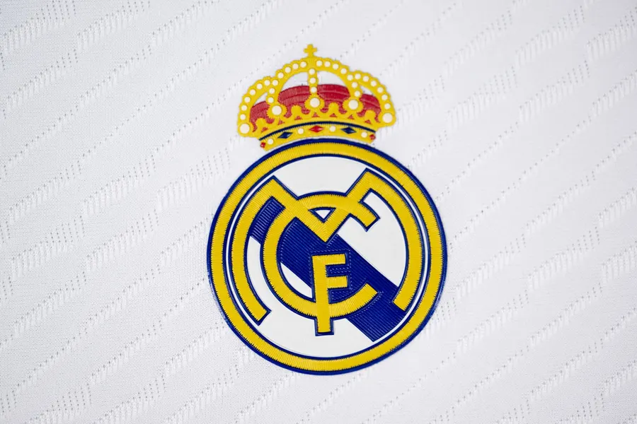
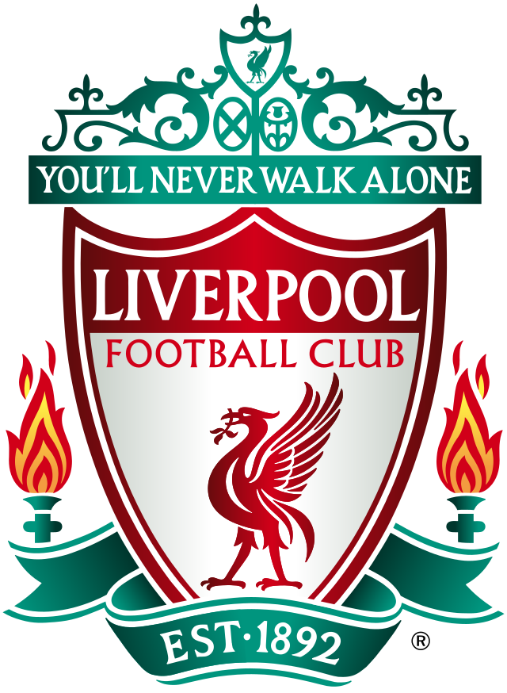

1 - Real Madrid (Espanha)
O Real Madrid continua a ser, em 2024, o maior clube de futebol do mundo, consolidando-se como uma verdadeira potência esportiva. Com uma história rica e vitoriosa, o time madrilenho é sinônimo de sucesso, conquistando títulos importantes tanto a nível nacional quanto internacional. Suas 14 Taças da Liga dos Campeões da UEFA, mais do que qualquer outro clube, exemplificam sua dominância no cenário europeu. Além disso, o Real Madrid mantém uma estrutura de jogo de altíssimo nível, combinada com um elenco repleto de estrelas globais, que inclui jogadores de classe mundial em todas as posições. Essa combinação de tradição, excelência e inovação no campo faz do Real Madrid uma referência única no futebol e a principal escolha para ocupar a liderança entre os melhores clubes de 2024.
2 - Bayer Leverkusen (Alemanha)

O Bayer Leverkusen surge em 2024 como uma das principais forças do futebol europeu, conquistando a segunda posição entre os melhores clubes do mundo. Conhecido por seu estilo de jogo rápido e ofensivo, o time alemão tem se destacado tanto no cenário nacional quanto internacional. Sua notável campanha nas últimas temporadas, aliada ao desenvolvimento de jovens talentos e à sólida estrutura de trabalho, coloca o Leverkusen em evidência. Com jogadores talentosos e uma comissão técnica inovadora, o clube conseguiu se posicionar entre os melhores, desafiando gigantes da Europa e mostrando sua consistência em competições de alto nível. A ascensão do Bayer Leverkusen como um dos maiores clubes de 2024 é o reflexo de sua ambição crescente e da busca incessante por títulos e conquistas importantes.
3 - Atalanta (Itália)
A Atalanta, em 2024, ocupa merecidamente a terceira posição entre os melhores clubes do mundo, se destacando como uma das grandes revelações do futebol europeu. Com um estilo de jogo dinâmico e altamente ofensivo, o time de Bérgamo conquistou admiradores ao redor do mundo por sua ousadia e capacidade de superar equipes tradicionais. A equipe tem mostrado um desenvolvimento notável nas últimas temporadas, principalmente em competições europeias, onde vem se mantendo competitiva, e na Serie A, onde briga de igual para igual com os gigantes italianos. A habilidade do treinador Gian Piero Gasperini em extrair o máximo de seus jogadores, aliados a uma filosofia de jogo agressiva e um sistema tático eficiente, tem sido a chave para o sucesso contínuo da Atalanta. Seu desempenho consistente e sua evolução no cenário internacional fazem do clube uma referência no futebol moderno
4 - Liverpool (Inglaterra)
O Liverpool, em 2024, mantém sua posição de destaque como o quarto melhor clube do mundo, consolidando-se como uma das maiores potências do futebol global. Sob a liderança de Jürgen Klopp, o time continua a impressionar com seu futebol intenso, pressiona constante e um jogo coletivo de altíssimo nível. Sua conquista de múltiplos títulos nas últimas temporadas, incluindo a Liga dos Campeões e a Premier League, reflete a força do clube tanto em competições nacionais quanto internacionais. O Liverpool tem uma base de torcedores apaixonada e uma equipe repleta de estrelas, como Mohamed Salah, que seguem impulsionando o time em direção a novas glórias. Com um elenco talentoso e um histórico de sucesso, o Liverpool segue como um dos clubes mais respeitados e temidos do futebol mundial em 2024.
5 - Botafogo (Brasil)
O Botafogo, em 2024, ocupa a quinta posição entre os melhores clubes do mundo, marcando sua ascensão como uma das grandes forças do futebol internacional. Tradicionalmente um dos clubes mais importantes do Brasil, o Botafogo vive uma fase de revitalização, com um elenco competitivo e uma gestão inovadora que tem colocado o time de volta ao cenário de elite do futebol mundial. Com destaque no Campeonato Brasileiro e em competições internacionais, o clube carioca tem mostrado consistência e capacidade de enfrentar os maiores desafios, impulsionado por jogadores de grande qualidade e um treinador visionário. A volta do Botafogo ao topo do futebol brasileiro, combinada com o fortalecimento de sua infraestrutura e a crescente base de torcedores, fazem do clube uma presença de peso no cenário global em 2024.